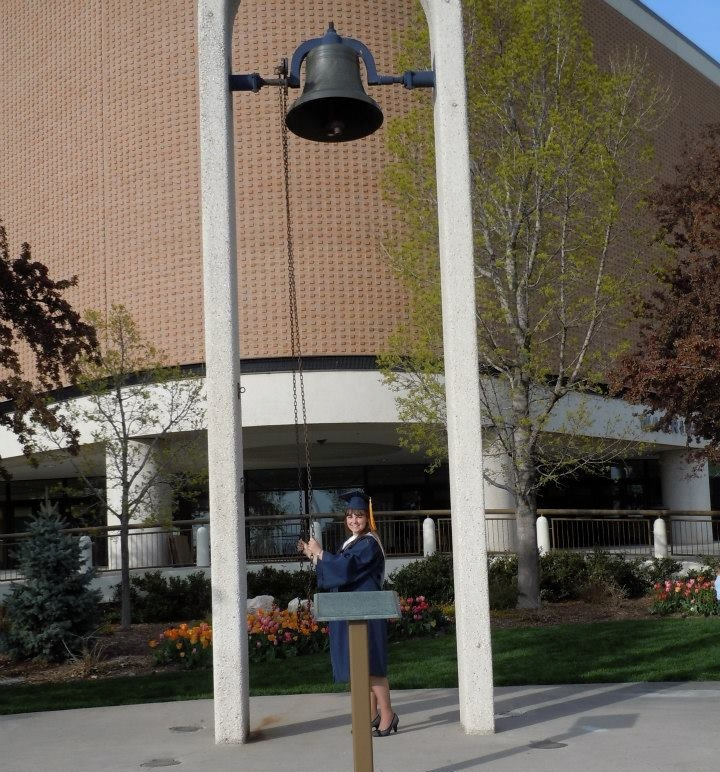

Jocelynn graduated with her undergraduate degree in Civil & Engironmental Engineering from BYU in April 2013
Jocelynn Anderson is a Masters student in Civil and Environmental Engineering
at Brigham Young University (BYU) with an emphasis in hydrology and hydroinformatics.
She earned her Bachelor's degree in April of 2013 in Civil and Environmental
Engineering from BYU. During her undergraduate studies she
started working with the CI-WATER group, with which she is now doing her Masters
research. She is helping develop an online app that will allow users to change the
land use of an area and run a storm model to see how the change affects flooding and
runoff. She hopes this can help cities and individuals plan and prepare for dangerous situations that can occur after changes in land use.
Professional Organizations and Service
Jocelynn and the co-ed sprint team racing the concrete canoe at Rocky Mountain Conference in April of 2013
Jocelynn has been involved in a multitude of groups and activities while she has been studying at BYU.
She is now an active member of the BYU Section of the Society of Women Engineers (SWE) after having
served as Historian, Vice-President, and President for BYU. Through SWE she has mentored girls from ages 12 to 20
and shared the fun of engineering with them and others around campus. She is also actively involved in Tau
Beta Pi and has been serving as the Utah Beta Section Treasurer since January of 2013. In addition,
she has been serving on the Graduate Student Society Council and has helped plan and host activities
for Graduate Students and their families.
Jocelynn is also very involved in the BYU Section of the American Society of Civil Engineers. She
often participates in service projects and has also been involved in Rocky Mountain Conference. During
the third year of her undergraduate degree she participated in the Pre-Design Competition and helped BYU take second
place with a water wheel made of a hula hoop and plastic cups that lifted a weight it a specified amount of time.
She participated in the Concrete Canoe Team for three years and was the Paddling Captain her final year.
Highlights of her involvement involve building the canoe, writing the paper, paddling through an icy Utah Lake,
paddling in the races at the conference, and finding any reason possible to jump in frigid water for a swim.
Favorite Activities and Pastimes
Jocelynn and classmates dancing in the Dominican Republic during February of 2013
A view of Gibson Lake in British Columbia, Canada taken on a hike by Jocelynn in Summer of 2012
In her spare time Jocelynn likes to dance, play piano, cook, cross stitch, hike (especially in the beauty of Canada), cycle, figure skate,
and learn new things. Although she just broke her leg and ankle, she is excited for the day that she can do
ballet, cha cha, swing, and country dance again. She also loves to find opportunities to serve and really enjoys doing family
history work. One of her favorite service projects she's had the opportunity to do thus far in her life was to go to the
Dominican Republic for a week to determine whether they could build a dam on one of their rivers. She had a great time and
fell in love with the people and their culture. She is excited to travel there again this semester and help with a new project
that will simplify their water management.
Contact Jocelynn
If you have any questions for Jocelynn, she'd love to answer them! Feel free to send her an
email!